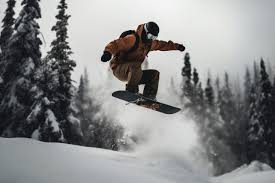

Getting Ready for the Snowboarding Season!
.jpeg)
Click here to find your 2024-2025 snowboarding gear!
Here are some ways to get ready for the snowboarding season:
- Cardio
- Build endurance and keep your heart rate up with activities like running, cycling, swimming, or walking.
- Flexibility and Mobility
- Improve your performance and prevent injuries with exercises like yoga and dynamic stretching.
- Balance and stability
- Improve your control and coordination on the snow with drills like lateral ski jumps and single-leg exercises.
- Ski Fitness Classes
- Focus on agility, balance, and overall body strength with classes taught by medical and fitness professionals.
- Layer Properly
- Wear thinner socks to improve circulation and keep your feet warm. Base layers are also important, especially in wet conditions.
- You can also keep an eye on snow reports to prepare for lots of powder days.

This website has an amazing workout routine that I have not obviously copied. Check it out!
Want to be in the best shape for the snowboarding season?
The ultimate snowboard workout program includes:
- Strength exercises
- Endurance training
- Mobility and flexibility exercises
- Balance and stability drills
- Multi directional speed and agility
Here are some tips to include for all the future pros out there:
- Engage your weight-bearing leg to improve stability and control on the snowboard.
- Incorporate exercises that target your core muscles to improve balance.
- Include plyometric exercises to enhance power and explosiveness.
- Incorporate cardio/ aerobic exercises to improve endurance.
Ready to dive into the ultimate snowboard workout program?
We’ll now examine various exercises that will have you shredding the slopes in no time.Strength Exercises
Basic strength exercises for snowboarding include:
- Squats
- Lunges
- Deadlifts
- Pushups
Here's an example workout:
- Stand with your feet shoulder-width apart in a “snowboard stance” and adjust to feet hip width if needed for comfort, with your knees slightly bent. This will be your starting position.
- Slowly lower yourself into a squat position
- Move side to side in a squat position, feeling where your hips are in space
- Explode to standing
- Repeat this exercise 12-15 times
- After that, stand in the squat position and pulse for 30 seconds
Including these strength exercises in your snowboarding workout program will enhance your performance and also aid in injury prevention.
Endurance Training:
Endurance training is vital for snowboarding, as it helps improve stamina for those long runs on the mountain. Snowboarding is an inherently aerobic activity that requires much from our hearts and lungs. You are missing a vital piece to the puzzle if you are not incorporating an aerobic program. Cardio workouts like running, walking, cycling, or swimming are perfect for building your endurance and keeping you in peak condition throughout the snowboarding season.
Mobility and Flexibility Exercises:
Maintaining proper form and preventing injuries on the slopes requires a focus on mobility and flexibility exercises, such as yoga and dynamic stretching. These exercises help you stay agile and ensure your body can handle the twists, turns, and jumps that come with snowboarding.
Incorporating dynamic stretches into your snowboarding workout program will keep your muscles limber and prepared for the physical demands of the sport. Prioritizing mobility and flexibility will not only improve your performance on the slopes but also keep you injury-free, allowing you to enjoy the season to the fullest.
We work on mobility/ flexibility so we can be efficient in our muscle contractions and not waste unnecessary energy.
We hope that one day you can shred like the pros
We hope that you can use this information to have an AMAZING season! Go shred!
To the Beginning!